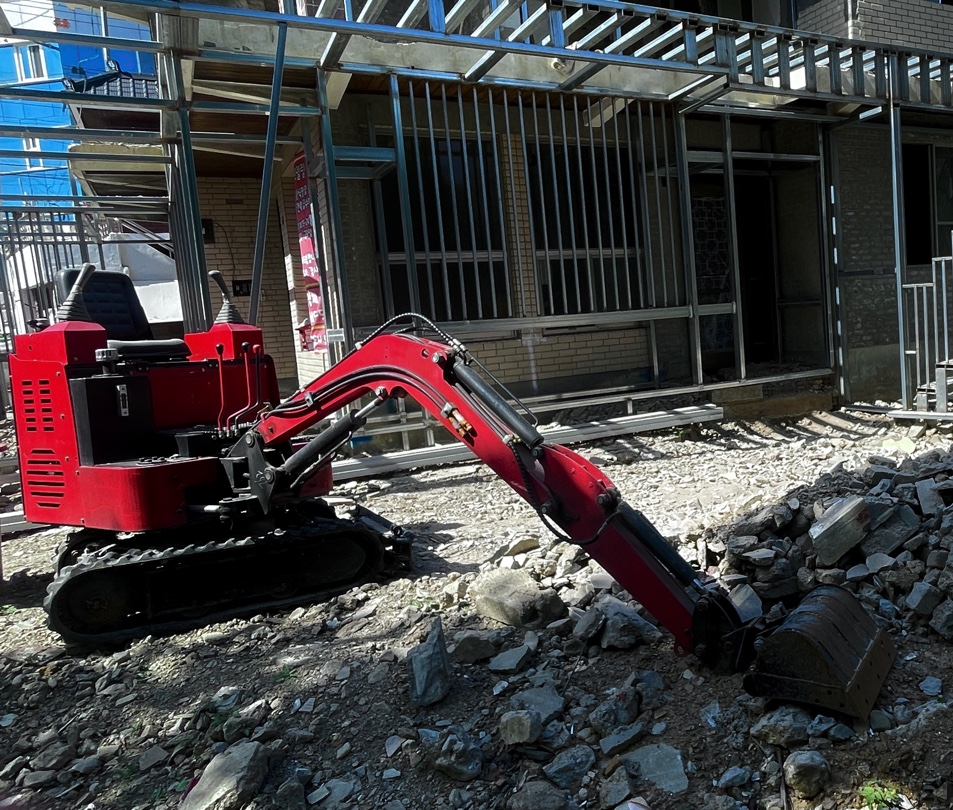
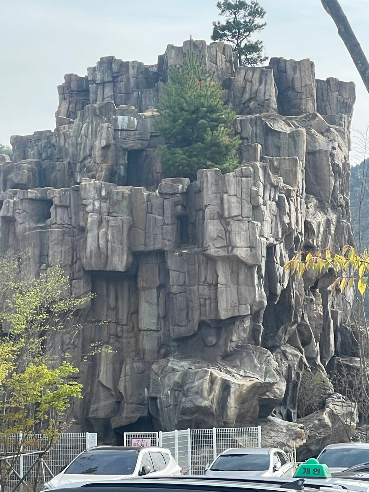
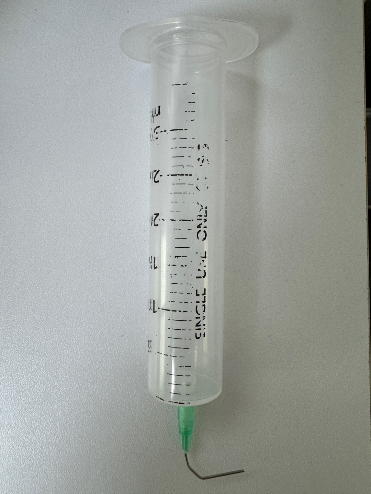
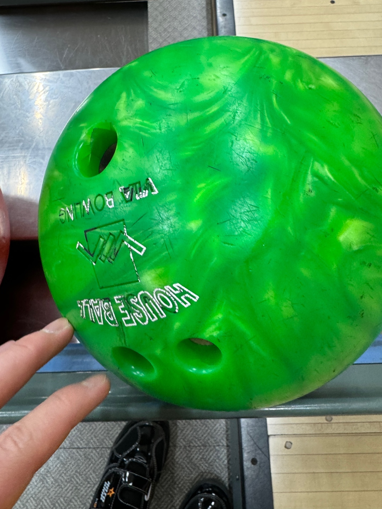
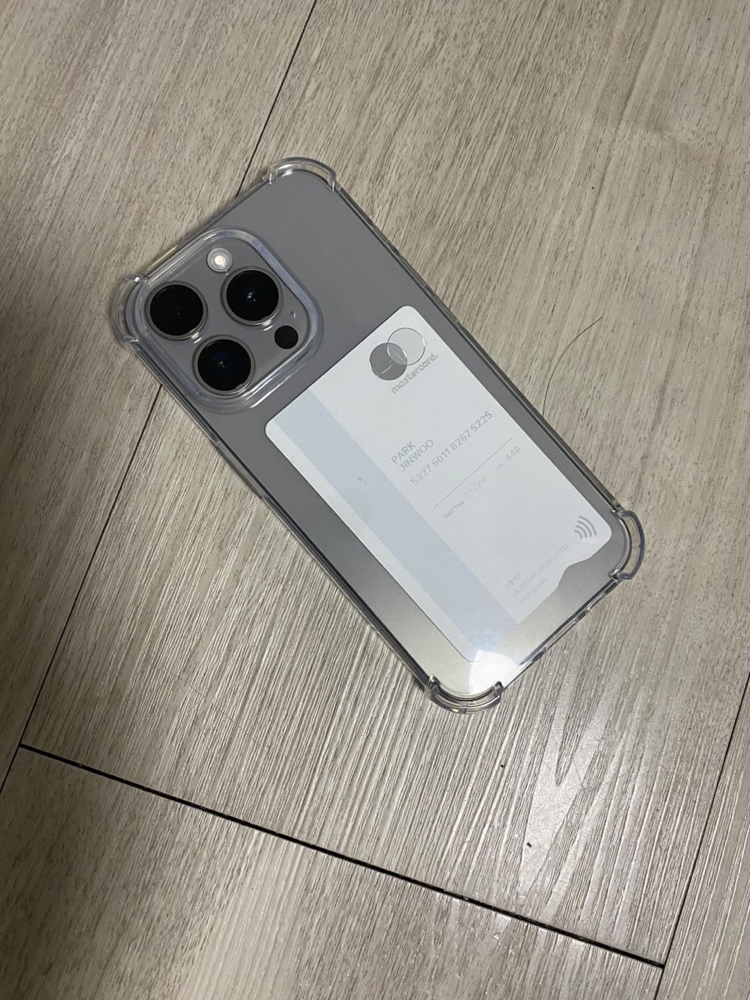
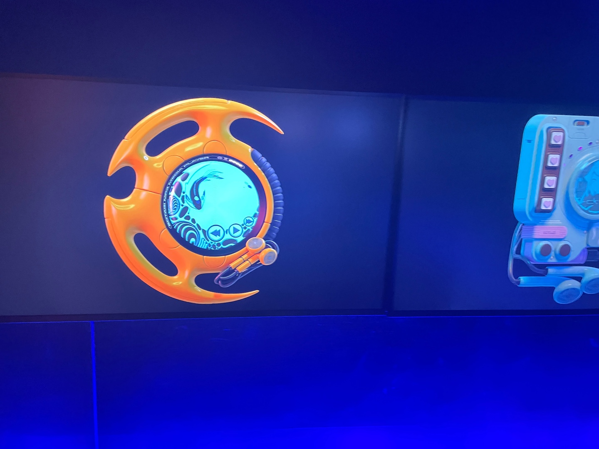
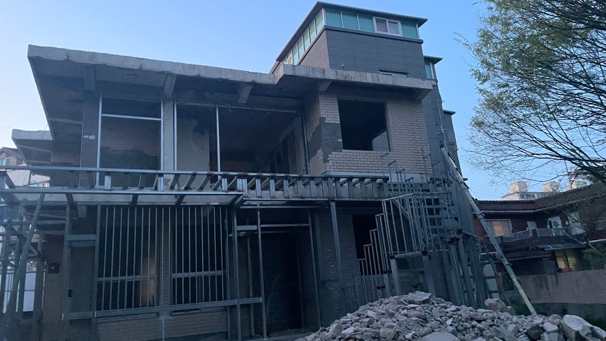
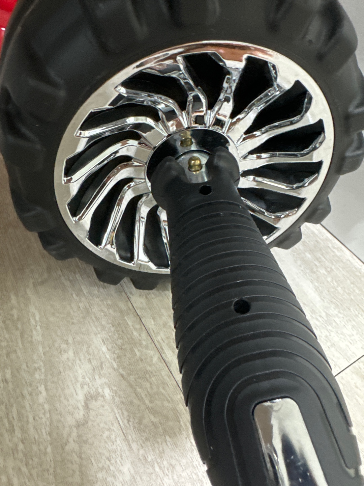
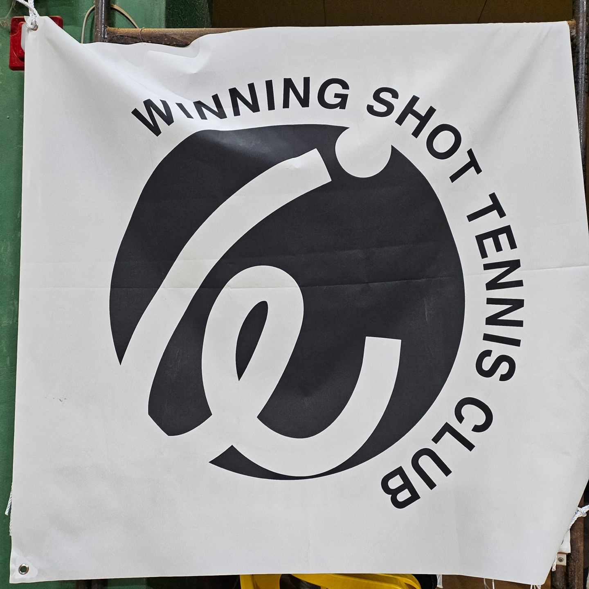

붉은 포크레인
공사 현장이다. 흔한 현장의 굴착기가 아닌, 강렬한 붉은 색이 시선을 가게 만든다. 색감이 예쁠 뿐만 아니라 작은 크기와 조정석의 클러치와 기어를 봤을 때 운전도 쉬워 보인다. 비슷한 굴착기가 할아버지 집에 있는데, 기회가 된다면 이 굴착기와 비슷하게 개조하고 싶다.
꽃과 우체통

포항역 앞 화단이다. 경산에서 내려와 포항으로 가는 길에 우체통을 봤다. 우체통 자체만으로 본다면 디자인적으로 뛰어나게 예쁘지 않지만, 주변의 환경이 우체통을 더 돋보이게 해 시선을 끈다. 빨간 우체통과 함께 뒤쪽 화단에 핀 꽃들이 어우러져 인공물과 자연물의 조화가 인상깊다.
울퉁불퉁한 형태의 돌산
암벽을 타러 가던 중 본 돌이다. 사람이 인공적으로 만든 것인지, 자연적 형태인지 잘 모르겠다. 울퉁불퉁하게 불규칙적으로 튀어나온 돌들이 평소에 볼 수 없는 독특한 형태를 만들어 실루엣을 재밌게 만든다. 또 그 속에서 계단식의 규칙이 보여 통일감도 느껴진다. 사이에 자란 풀과 나무들은 부족한 색감을 다채롭게 만들어준다.
주사기
사랑니를 발치 한 후 받은 주사기이다. 이를 뺀 자리의 구멍으로 음식물이 낄 수 있어 이 주사기를 이용해 음식물을 제거해야 한다. 특이한 점은 보통의 주사기와 달리 끝부분이 기역자로 휘어있다. 입안 깊숙한 구멍으로 넣어야 하기에 이렇게 디자인한 것이다. 사용자의 편의와 쓰임새를 생각해서 형태를 바꾼 것도 디자인이라 생각한다. 그런 점에서 깊숙한 구멍에 넣어야 한다는 용도와 투명한 재질로 물의 양도 볼 수 있게 한, 사용자의 편의와 용도에 맞춘 디자인이라 생각한다.
초록색 볼링공
볼링장에서 볼 수 있는 초록색 볼링공이다. 볼링을 치며 든 생각이 볼링공의 크기와 무게는 어떤 기준에서 만들었고, 그 유래가 궁금해졌다. 검색을 해보니 이집트 고분을 조사하던 중 어린이의 무덤 속에서 오늘날과 비슷한 형태의 공을 발견했다는 것을 알았다. 볼링공의 유래가 깊다는 것을 알았다.
아이폰 15Pro
목요일에 5년간 쓰던 핸드폰을 버리고 새로운 핸드폰을 샀다. 가장 최근에 나온 아이폰을 샀는데 매우 예쁘다. 겉모습은 기존의 카메라 렌즈 크기가 커졌고, 소리 설정을 눌러서 변경할 수 있다. 그리고 충천 코드가 C형으로 변경됐다. 가장 마음에 드는 부분은 인터페이스가 더욱 고급지고 예뻐졌다. 버튼은 누를 때마다 화면 상단에 다양한 기능들이 보인다. 아이폰이 디자인적으로 칭찬받는 이유가 있다.
미래의 핸드폰
미래의 핸드폰이라는 추상적인 작품이다. 전시회장에서 본 작품이다. 형태적으로 핸들처럼 생겼고, 가운데 화면에는 음악을 재생하고 있는 것처럼 보인다. 나는 이 작품이 불필요한 장식을 더해가며 점점 현대의 상품이 기괴해진다고 느꼈다. 아래에 달린 이어폰은 유행의 순환을 표현하고 있다.
집
집 앞의 건물이 공사 중이다. 몇 주 전까지만 해도 사람이 살던 집이었는데 언제부턴가 공사를 하기 시작했다. 사진으로만 봤을 때, 공사 중인 건물과 뒤쪽의 건물이 대비되어 앞의 건물이 더 강조되어 보인다. 또 앞의 잔해물이 이 집이 공사 중이라고 유추하게 해준다. 올해 안에 공사가 끝나 멋진 집으로 완성되면 좋겠다.
타이어처럼 생긴 운동기구
복근운동을 위한 운동기구를 구매했다. 이름은 AB롤아웃으로 바닥에 무릎을 대고, 바퀴 손잡이를 잡아 앞으로 갔다 돌아오는 형식이다. 배에 전체적인 타격을 주어 복근에 효과가 좋은 운동 중 하나이다. 쓰임새에 맞게 형태가 타이어처럼 생겼고, 그 옆에 손잡이가 붙어있다.
테니스 클럽 로고
몇 달 전 친구와 함께 테니스 클럽의 로고를 만들어 준 적이 있다. 지인 부탁이라 했고, 며칠 전 연락을 통해 잘 사용하고 있다고 하셨다. 같이 로고를 만든 친구에게도 보여주니 뿌듯해했다. 우리가 만든 로고로 양말과 옷을 만들고, 포스터도 만드는 걸 보니 디자인의 즐거움이 이런 것인가 생각했다.
눈1
눈2
눈3
눈4
눈5
눈6
눈7
눈8
눈9
눈5
눈6
눈7
눈8
눈9
눈 바닥
우체통2
우체통3
우체통4
우체통5
포크레인1
포크레인2
포크레인3
포크레인4
포크레인5
포크레인6
볼링공1
볼링공2
볼링공3
볼링공4
볼링공5
잔상1
잔상2
잔상3
로고1
로고2
집1
집2
집3
집4
집5
돌산1
돌산2
돌산3
돌산4
돌산5